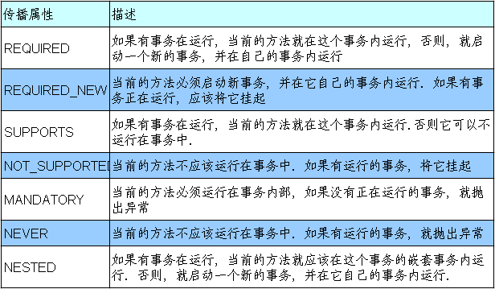
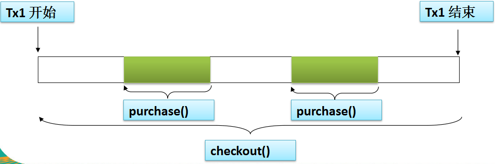
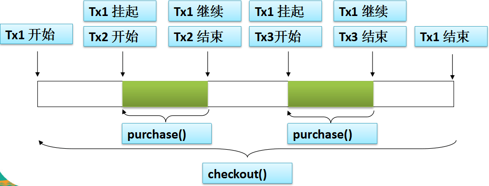

事务传播属性
当事务方法被另一个事务方法调用时, 必须指定事务应该如何传播. 例如: 方法可能继续在现有事务中运行, 也可能开启一个新事务, 并在自己的事务中运行.
事务的传播行为可以由传播属性指定. Spring 定义了 7 种类传播行为.

需求(继续之前的练习)
用户可以同时购买两种书籍,但是当余额不足,只能购买其中一种书时,需要事务能正常跑,被购买的对应书库存相应减少,余额减少,未被购买的书库存不变。
新定义 Cashier 接口: 表示客户的结账操作
Cashier.java:
1 2 3
| public interface Cashier { public void checkout(String username, List<String> isbns); }
|
CashierImpl.java:
1 2 3 4 5 6 7 8 9 10 11 12 13 14
| @Service("cashier") public class CashierImpl implements Cashier { @Autowired private BookShopService bookShopService; // 添加事务注解 @Transactional @Override public void checkout(String username, List<String> isbns) { // for(String isbn:isbns) { bookShopService.purcase(username, isbn); } } }
|
修改BookShopServiceImpl.java里的purcase方法:
1 2 3 4 5 6 7 8 9 10 11 12 13 14 15 16
| /* * 添加事务注解 * 使用 propagation 指定事务的传播行为,即当前的事务方法被另一个事务方法调用时 * 如何使用事务,默认取值为 REQUIRED ,即使用调用方法的事务 * REQUIRES_NEW:事务自己的事务,调用的事务方法的事务被挂起 */ @Transactional(propagation = Propagation.REQUIRES_NEW) @Override public void purcase(String username, String isbn) { // 1.获取书单价格 int price = bookShopDao.findBookPriceByIsbn(isbn); // 2.更新书的库存 bookShopDao.updateBookStock(isbn); // 3.更新用户余额 bookShopDao.updateUserAccount(username, price); }
|
Springtx增加testCashier方法:
1 2 3 4
| @Test public void testCashier() { cashier.checkout("吴彦祖", Arrays.asList("1001","1002")); }
|
这里我又踩坑了,我一开始没仔细看视频,把propagation = Propagation.REQUIRES_NEW加在了 CashierImpl.java 里面,结果没起作用,后来我仔细对照视频里面的代码,发现应该加在 BookShopServiceImpl.java 里面。因为bookShopService.purcase事务嵌套在cashier.checkout事务中。
REQUIRED 传播行为
当 bookService 的 purcase() 方法被另一个事务方法 checkout() 调用时, 它默认会在现有的事务内运行. 这个默认的传播行为就是 REQUIRED. 因此在 checkout() 方法的开始和终止边界内只有一个事务. 这个事务只在 checkout() 方法结束的时候被提交, 结果用户一本书都买不了。
事务传播属性可以在 @Transactional 注解的 propagation 属性中定义。

REQUIRES_NEW 传播行为
另一种常见的传播行为是 REQUIRES_NEW. 它表示该方法必须启动一个新事务, 并在自己的事务内运行. 如果有事务在运行, 就应该先挂起它.

并发事务所导致的问题
当同一个应用程序或者不同应用程序中的多个事务在同一个数据集上并发执行时, 可能会出现许多意外的问题
并发事务所导致的问题可以分为下面三种类型:
- 脏读: 对于两个事物 T1, T2, T1 读取了已经被 T2 更新但 还没有被提交的字段. 之后, 若 T2 回滚, T1读取的内容就是临时且无效的.
- 不可重复读:对于两个事物 T1, T2, T1 读取了一个字段, 然后 T2 更新了该字段. 之后, T1再次读取同一个字段, 值就不同了.
- 幻读:对于两个事物 T1, T2, T1 从一个表中读取了一个字段, 然后 T2 在该表中插入了一些新的行. 之后, 如果 T1 再次读取同一个表, 就会多出几行.
事务其他属性(隔离级别&回滚&只读&过期)
增加 BookShopServiceImpl.java 代码进行试验:
1 2 3 4 5 6 7 8 9 10 11 12 13 14 15 16 17 18 19 20 21 22 23
| /* * 添加事务注解 * 1.使用 propagation 指定事务的传播行为,即当前的事务方法被另一个事务方法调用时 * 如何使用事务,默认取值为 REQUIRED ,即使用调用方法的事务 * REQUIRES_NEW:事务自己的事务,调用的事务方法的事务被挂起 * 2.使用 isolation 指定事务的隔离级别，最常用的取值为 READ_COMMITTED * 3.默认情况下 Spring 的声明式事务对所有的运行时异常进行回滚。也可以通过对应的属性进行设置.通常情况下取默认值即可 * 4.使用 readOnly 指定事务是否只读。表示这个事务只读数据但不更新数据，这样可以帮助数据库引擎优化事务。 * 5.使用 timeout 指定强制回滚之前事务可以占用的事件 */ @Transactional(propagation = Propagation.REQUIRES_NEW, isolation=Isolation.READ_COMMITTED, timeout = 3) @Override public void purcase(String username, String isbn) { try{ Thread.sleep(5000); } catch (Exception e) { // TODO: handle exception e.printStackTrace(); } //以前的代码,我就不打了,节省篇幅 }
|
使用XML文件的方式配置事务
在 Spring 2.x 事务通知中, 可以像下面这样在 <tx:method> 元素中设定传播事务属性
新建一个com.springtxxml的包,将com.springtx包内的类全都复制进来,修改包名,把所有注解删掉(除了@Override),src下复制applicationContext.xml创建一个副本叫applicationContextXml.xml。
applicationContextXml.xml新增代码(记得把启用事务注解那段代码删掉):
1 2 3 4 5 6 7 8 9 10 11 12 13 14 15 16 17 18 19 20
| <bean id="bookShopDao" class="com.springtxxml.BookShopDaoImpl"> <property name="jdbcTemplate" ref="jdbcTemplate"></property> </bean> <bean id="bookShopService" class="com.springtxxml.BookShopServiceImpl"> <property name="bookShopDao" ref="bookShopDao"></property> </bean> <bean id="cashier" class="com.springtxxml.CashierImpl"> <property name="bookShopService" ref="bookShopService"></property> </bean> <!-- 配置事务属性 --> <tx:advice id="txAdvice" transaction-manager="transactionManager"> <tx:attributes> <tx:method name="*"/> </tx:attributes> </tx:advice> <!-- 配置事务切入点 --> <aop:config> <aop:pointcut expression="execution(* com.springtxxml.BookShopService.*(..))" id="txPointcut"/> <aop:advisor advice-ref="txAdvice" pointcut-ref="txPointcut" /> </aop:config>
|
配置事务属性的话需要修改上述结构与配置,在com.springtxxml内部建一个service包,把BookShopService.java和Cashier.java放进去,在service包内继续创建个Imp包,把BookShopServiceImpl.java和CashierImpl.java放进去
继续修改applicationContextXml.xml:
1 2 3 4 5 6 7 8 9 10 11 12 13 14 15 16 17 18
| <bean id="bookShopService" class="com.springtxxml.service.Imp.BookShopServiceImpl"> <property name="bookShopDao" ref="bookShopDao"></property> </bean> <bean id="cashier" class="com.springtxxml.service.Imp.CashierImpl"> <property name="bookShopService" ref="bookShopService"></property> </bean> <!-- 配置事务属性 --> <tx:advice id="txAdvice" transaction-manager="transactionManager"> <tx:attributes> <tx:method name="*"/> <tx:method name="purcase" propagation="REQUIRES_NEW"/> </tx:attributes> </tx:advice> <!-- 配置事务切入点 --> <aop:config> <aop:pointcut expression="execution(* com.springtxxml.service.BookShopService.*(..))" id="txPointcut"/> <aop:advisor advice-ref="txAdvice" pointcut-ref="txPointcut" /> </aop:config>
|